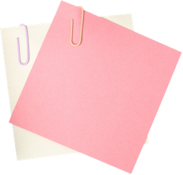
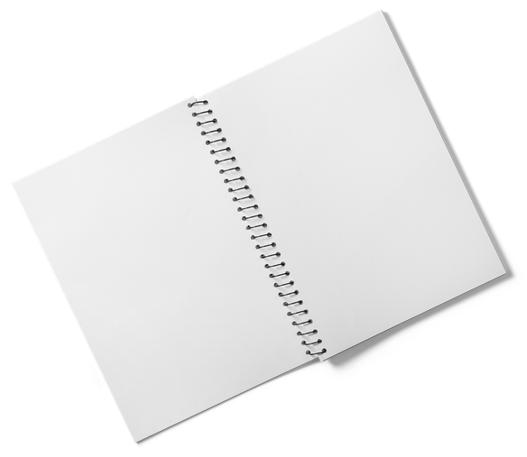
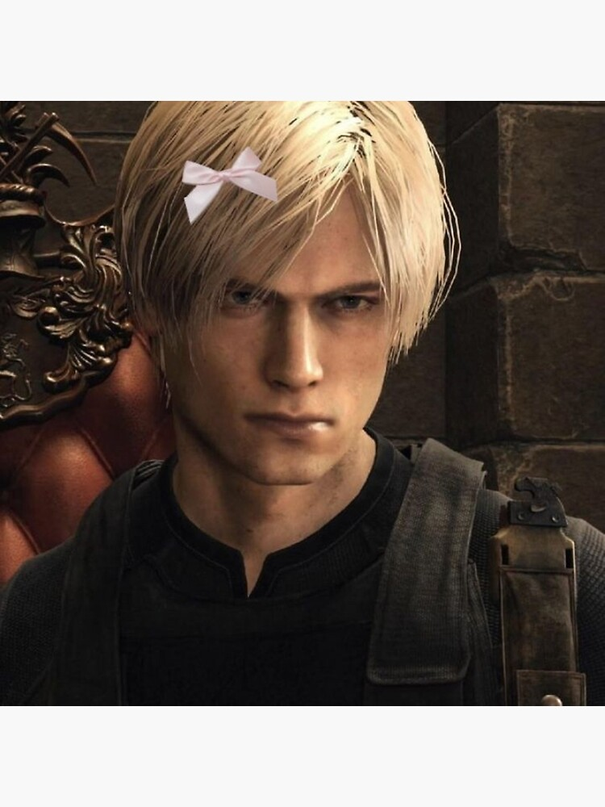

photo / video
Welcome to my Application page! I hope you enjoy it!!
Click on the folders and it will open to my responses, click again to close them!
There is some with some secrets


Welcome to my Application page! I hope you enjoy it!!
Click on the folders and it will open to my responses, click again to close them!
There is some with some secrets
What drew me to Communication Council was seeing how my friend grew through the community they helped build. They always had something going on, whether it was planning an activity for Moody, attending meetings, or going out with other members. What stood out to me was the sense of purpose they had. They had ideas they cared about and people around them who helped put those ideas into action within our college. Seeing their involvement made me want to experience that sense of connection and contribute to it myself.
I know I am capable of helping others, and I want to put that willingness toward making Moody a better place for the students who come after me. In particular, I want underclassmen and incoming students to have a better experience than I had. Looking back at my own time here makes me think about what could have made a difference and how I could help provide that for someone else. I want students to feel comfortable getting involved, sharing their ideas, and finding people they relate to.
I hope to leave my mark by being someone who pays attention to what could improve and is willing to help make it happen. That means listening to other students, contributing ideas, and following through on the work those ideas require. My friend showed me how much belonging to a community can shape someone's college experience. I want to help create that experience for others while finding my own place within it.
I chose to be a Radio-Television-Film major because I love storytelling and how it allows us to express ideas and relate to others. We can connect with someone we have never met or recognize a feeling in a situation we have never experienced. What interests me is how something personal to one person can become meaningful to someone else. A story can give us a way to understand each other when explaining ourselves directly might be difficult.
Film drew me in because there are so many ways to communicate within it. A conversation, a sound, or even a moment of silence can change how we understand a scene. I want to explore those choices and how they allow someone to express an idea beyond simply saying what they mean.
Being a filmmaker while exploring multiple disciplines has broadened my outlook on expression. Films, video games, music, and websites each offer different ways to share something with an audience. A film might ask us to observe someone's experience, while a game allows us to participate in it. Music can express a feeling without giving it a specific story, leaving us to connect it to our own lives.
That variety makes me curious about what else is possible. Learning about another medium can change how I approach my own work and introduce an idea I would not have considered before. I chose this major because I want to keep discovering how to express myself while understanding more about how others see and experience the world.
Working on a class fabrication project in a group of three taught me how much getting to know the people around me can affect how we work together. We started as strangers, but we spent time talking in class and hanging out outside of it. As we got to know each other, we understood more about how each person thought and what they could bring to the project. That helped us develop our ideas together.
I have found the same thing at work. Getting to know my coworkers, both during work and outside of it, helps us bond and work more efficiently. As a lead, I like understanding who someone is and the skills they bring, so I can help bring those different strengths together.
These experiences have taught me to put time into getting to know people when we are working together. I enjoy finding a direction we can agree on while making room for everyone's individuality. For me, that starts with being interested in the people I am working with and giving us a chance to become comfortable with each other.
What drives me is the possibility of seeing an idea become something real, especially when it comes from sharing it with others. I enjoy bouncing ideas back and forth and seeing where a conversation can take us. Someone might notice a possibility I had overlooked or suggest something I would never have thought of myself. That exchange makes me want to keep going because the idea becomes something we are excited to create together.
I stay motivated by being around people who want to share what they know and are open to trying things. We each bring different skills, and I enjoy discovering how those skills can work together on a project. I might not know how to accomplish every part of an idea, but being able to figure it out with someone else makes it feel more possible.
When I feel stuck, sharing what I am thinking can help me find a direction again. Even a small suggestion can give me something new to try. Knowing that a conversation can eventually become something we can see, hear, or experience is what makes me want to keep pursuing my ideas.
During my time at UTLA, I realized I had developed tunnel vision around my career. I was focused on a specific job and the exact requirements I thought I needed to meet. Over the years, I had burned myself out trying to fit that perfect model, losing sight of the things I enjoyed and the skills I could share with others. I worried that by becoming exactly what I thought a job required, I would forget why I loved the work in the first place.
After my internship ended, I took time to reflect on myself and what I enjoyed. I met people in the industry, asked about their backgrounds and how they got where they were, and listened to their advice. What stayed with me was the encouragement to enjoy myself and explore different places, ideas, and communities. I had been so focused on one destination that I had stopped giving myself room to discover what else interested me and the things I used to enjoy.
Those conversations helped me reconsider how I approached my goals. I could make the most of the opportunities in front of me and let my effort, curiosity, and work show what I was capable of. I learned that I could take my future seriously while still enjoying the process. Being open to new challenges and experiences could help me grow in ways that trying to fit a perfect model never would.
My first choice is Media because I want to explore content creation and video editing while collaborating with a group through a more formal creative process. I enjoy sharing ideas, but I also want to get better at developing them together, planning how to execute them, and working through feedback toward a finished piece. Creating content for Moody would give me a purpose behind that work while allowing me to learn from how others approach it.
My second choice is Community Engagement because I want to challenge myself to become more proactive within my community. I want to make a greater effort to show up, volunteer, and help organize activities alongside others. This committee would push me to meet people outside my usual circles and take more responsibility for contributing to the college experience we share.
My third choice is Career and Alumni Relations. As a senior who has attended conferences and job panels, I would love to share what I have learned from those experiences and my own career exploration. I know how helpful it can be to hear from someone who has already navigated questions you are beginning to ask. I want to help organize opportunities for those conversations and support younger students as they find their way through college and begin exploring their careers.
The best advice I have received is that your ideas can become reality, but you can be the person stopping yourself from pursuing them. Every object, store, building, or piece of software we use began with someone thinking of it. Someone cared enough about that idea to work through the challenges of making it real. No matter how big or small it became, something that once existed only in someone's mind became part of our everyday lives.
I think we forget that when considering our own ideas. We imagine that everything needs to be structured, follow a corporate model, or have a clear path to success before we can begin. But life is filled with chaos and uncertainty, and waiting for everything to make sense can keep us from ever trying.
I apply that advice by reminding myself that I do not need every detail figured out to start pursuing an idea. Sharing it with someone, exploring how it could work, or trying one small part gives it a chance to become something. I would rather discover what is possible through the process than keep waiting for the perfect circumstances to begin.
My other commitments are with Texas Immersive Institute and my two jobs, Texas Studios and Texas University Union. My job scheduling can be changed to fit the needs of any Communication Council attendance.
Your closing video goes here.
